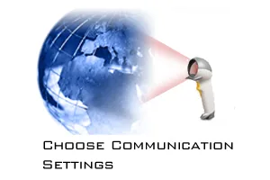

Positive Developments
Network and Programming Support · Oct 1999 – Jan 2000 · Anaheim, CA
Positive Developments — network support and warehouse-industry programming for PalmOS and handheld devices.
- SendGTL: Win32 MFC utility that loads firmware and data files to warehouse handhelds over serial — parameterized via
SendGTL.txtwith manufacturer/model lists, comm settings, and custom bitmap dialogs - Allstate Floral (PalmOS): order and item scanning on Palm/Symbol hardware — barcode scan screens, PDI file import, order index navigation (source tree:
Allstate Floral V2) - Help desk and phone support for in-house staff and warehouse clients
Work Performed
Programmed warehouse applications for PalmOS and other handheld devices; maintained and extended the Allstate Floral order-entry scanner (v2.07 bug fixes and UI adjustments).
Built SendGTL — a configurable loader that reads pipe-delimited parameter rows, validates file paths, and drives serial transfer dialogs with registry persistence (Positive Developments registry key).
Provided network support and help desk coverage for employees and warehouse clients by phone.
From the project archive
The original project archive holds 1 note. They are not published here because they belong to Positive Developments; I’m happy to walk through the design and code in an interview.
Screenshots

Interested in working together?